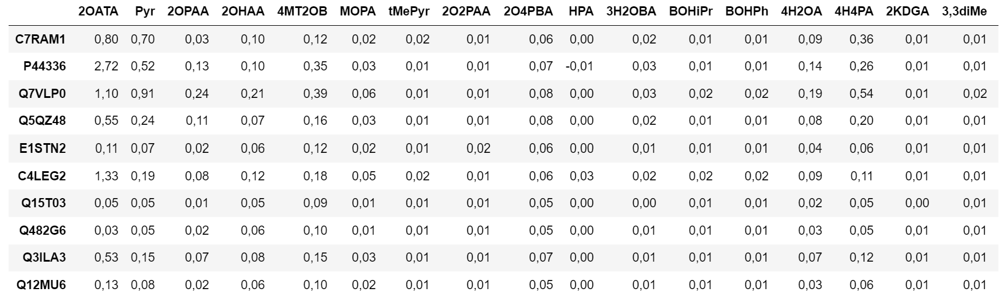
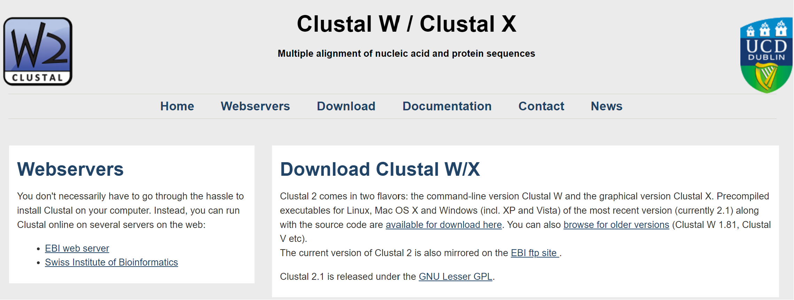
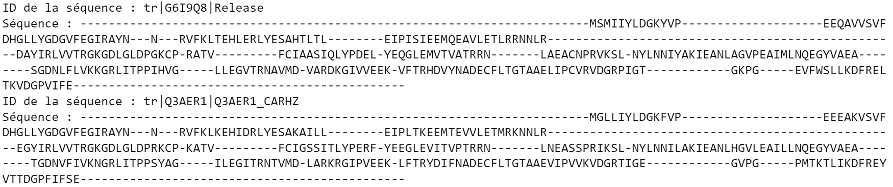
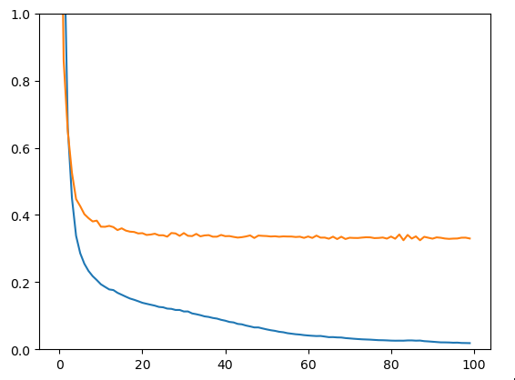

Traitement de séquences enzymatiques via Deep Learning
Projet mené en duo
Dans ce travail, nous allons explorer l’enzymologie à l’aide du deep learning. Plus précisément, nous chercherons à utiliser des données obtenues expérimentalement pour concevoir et entraîner un réseau de neurones capable de prédire l’activité de chaque enzyme sur les différents substrats disponibles.
1. Traitement des données
a) Epuration du dataset
Après avoir importé les données sous forme de fichier CSV dans notre notebook, nous avons procédé à plusieurs traitements :
- Suppression des colonnes inutiles.
- Élimination des valeurs manquantes (NaN), générées lors de l’importation depuis Excel.
- Renommage des colonnes pour une meilleure lisibilité.
Nous avons également filtré les données en supprimant certaines lignes marquées comme peu fiables, notamment celles comportant les symboles "-" dans les colonnes Induction (Gel) et Expression (Gel).
{kind=link}

De plus, on stocke certaines données comme le Bradford et les puretés dans des dictionnaires pour les utiliser plus tard dans le modèle :
bradford = {}
for line in range(8, len(df.index)):
bradford[df.index[line]] = float(df['Bradford (mg/mL)'][line].replace(',', '.'))
purities = {}
for row in range(len(df.columns)):
if df[df.columns[row]]['Pureté'] != '---':
purities[df.columns[row]] = int(df[df.columns[row]]['Pureté'][:-1])
else:
purities[df.columns[row]] = 100b) Traitement des séquences
En important le fichier fasta, on ajoute les séquences dans un dictionnaire avec comme clé le nom courant et comme objet la séquence complète. Le module re permet de rechercher le nom courant dans la ligne header puis on commence par normaliser les données avec le Bradford qu’on avait précédemment enregistré :
for line in range(len(df.index)):
for row in range(len(df.columns)):
n_line = df.index[line]
n_row = df.columns[row]
cell = df[n_row][n_line]
df[n_row][n_line] = float(cell.replace(',', '.')) / bradford[n_line]c) Alignement des séquences
Pour cela, nous avons utilisé Clustal2, un exécutable qui fait de l’alignement de données en prenant en entrée un fichier Fasta. Pour cela, on utilise un module appelé ClustalwCommandline.
{kind=link}

clustalw_exe = "clustalw2.exe" # L'emplacement que l'executable qui va les traiter
output_file = "output.aln"
input_file = "FASTAs_Final.fasta"
sequences = list(SeqIO.parse(input_file, "fasta"))
seq_records = [SeqRecord(seq.seq, id=seq.id) for seq in sequences]
# Créer un objet SeqRecord pour chaque séquence
temp_file = "temp.fasta" # Créer un fichier temporaire pour stocker les séquences
SeqIO.write(seq_records, temp_file, "fasta")
clustalw_cline = ClustalwCommandline(
# Initialiser l'objet ClustalwCommandline pour traiter correctement les données
cmd=clustalw_exe,
infile=input_file,
outfile=output_file,
output="clustal", # Format de sortie
align=True, # Effectuer un alignement complet
)
clustalw_cline()
# Exécution de la commande ClustalW2
aligned_sequences = list(SeqIO.parse(output_file, "clustal"))
# Maintenant on peut lire les séquences alignéesAprès un temps de traitement d’environ 5 minutes, on se retrouve avec des séquences alignées sous cette forme :
{kind=link}

2. Modèles d’IA
Afin de pouvoir utiliser les séquences des différentes enzymes dont nous disposons, nous avons dû les “encoder” de manière à pouvoir fournir à notre réseau de neurones des valeurs numériques.
Le choix qui nous a semblé le plus pertinent était de faire correspondre chaque (A,B,C…) à des nombres (1,2,3…) pour obtenir un tableau numpy d’entiers de longueur 546 pour chaque séquence.
sequence = "-AB--TGA(..)ALA---"
sequence encodée = [0,1,2,0,0,(..)1,12,1,0,0,0]Pour ce qui est des ‘ - ’ induits par l’alignement des séquences, nous avons décidé de lui attribuer le chiffre 0.
a) Premier modèle : réseau dense classique
Pour commencer nous avons tout d’abord effectuer des premiers test avec un modèle très basique, en utilisant seulement quelques couches de neurones interconnectés :
model = Sequential()
model.add(Dense(100, activation="relu", input_shape=(546,)))
model.add(Dense(150, activation="relu"))
model.add(Dense(50, activation="relu"))
model.add(Dense(18))Ainsi, à partir des inputs que nous lui fournissons (les séquences encodées sous forme de tableaux), le modèle prédit 18 valeurs en sortie, correspondant aux 18 activités cherchées pour les différents substrats.
Nous avons ensuite entraîné ce modèle sur l’ensemble des séquences que l’on a préalablement séparées en données de train et de test :
X_train, X_test, y_train, y_test = train_test_split(X, y, test_size=0.2, random_state=78)Nous obtenons ici le loss de train (bleu) et le loss de test (en jaune).
{kind=link}

Nous sommes clairement confronté à un problème d’overfitting : le modèle apprend par coeur les données d’entrées tandis qu’il ne parvient pas à généraliser sur des données qu’il n’a pas vues durant son entraînement. Le modèle n’est donc pas adapté : tentons d’en créer un peu évolué.
b) Deuxième modèle : réseau dense un peu plus évolué
Voici une architecture plus performante :
model = Sequential()
model.add(Dense(500, activation="relu", input_shape=(546,)))
model.add(BatchNormalization())
model.add(Dropout(0.3))
model.add(Dense(300, activation="relu"))
model.add(BatchNormalization())
model.add(Dropout(0.2))
model.add(Dense(200, activation="relu"))
model.add(BatchNormalization())
model.add(Dropout(0.3))
model.add(Dense(100, activation="relu"))
model.add(BatchNormalization())
model.add(Dense(50, activation="relu"))
model.add(Dropout(0.2))
model.add(Dense(18))Nous avons introduit du Dropout, permettant de désactiver aléatoirement un certain pourcentage de neurones dans chaque couche lors de l’entraînement, dans l’objectif d’empêcher un apprentissage par coeur des données et favoriser la généralisation.
De plus afin d’améliorer la stabilité de l'entraînement et accélérer la convergence nous avons ajouté des layers de
BatchNormalization.

Comme on peut le voir sur le graphique les résultats sont nettement meilleurs en terme de capacité à généraliser (peut d’écart entre les deux courbes). On obtient un loss de test d’environ 0.028. Pourtant lorsqu’on regarde les prédictions on remarque que cela n’est pas très concluant. Voici les prédictions et les valeurs attendues pour l’enzyme C7RAM1, pour les différents substrats :

Bien qu’une partie des prédictions possèdent le bon ordre de grandeur, on trouve un écart non négligeable.
c) Troisième modèle : réseau à convolution 1D
Nous avons donc essayé d’implémenter un réseau à convolution 1D. Ce type de réseau est très intéressant car il permet de mieux traiter les données spatialement parlant, grâce à des filtres 1D qui vont parcourir les séquences de nos enzymes.

Pour utiliser ce type de réseau il nous a semblé préférable d’avoir des données sous la forme one hot encoded (tableaux de 0 avec seulement un seul 1 à la position de la lettre correspondante).
Ainsi nous avons implémenté la fonction suivante :
def one_hot_encoding(dic):
tab = []
erreur = False
sequences = [sequ for sequ in dic.values()]
for i in range(len(sequences)):
tab_lettres = []
for lettre in sequences[i]:
one_hot_tab = [0 for i in range(27)]
if lettre == "-":
one_hot_tab[0] = 1
tab_lettres.append(one_hot_tab)
elif (ord(lettre) <= 90) & (ord(lettre) >= 65):
one_hot_tab[ord(lettre)-64] = 1
tab_lettres.append(one_hot_tab)
else:
print("Séquence",i,"possède une valeur non standard")
erreur = True
if not erreur:
tab.append(tab_lettres)
erreur = False
return np.array(tab)Et voici notre architecture :
model = Sequential()
model.add(Conv1D(filters=32, kernel_size=5, activation='relu', input_shape=(546,27)))
model.add(MaxPooling1D(pool_size=2))
model.add(Conv1D(filters=64, kernel_size=5, activation='relu'))
model.add(MaxPooling1D(pool_size=2))
model.add(Conv1D(filters=128, kernel_size=3, activation='relu'))
model.add(MaxPooling1D(pool_size=2))
model.add(Conv1D(filters=256, kernel_size=2, activation='relu'))
model.add(MaxPooling1D(pool_size=2))
model.add(Flatten())
model.add(Dense(128,activation='relu'))
model.add(Dropout(0.2))
model.add(Dense(80,activation='relu'))
model.add(Dense(64,activation='relu'))
model.add(Dropout(0.2))
model.add(Dense(32,activation='relu'))
model.add(Dense(18))Afin de vérifier et valider le bon fonctionnement du modèle, nous avons commencé par intentionnellement l’entraîner sur 20 séquences seulement (les mêmes en train et en test) :


Mais ce qui nous intéresse vraiment ici c’est la performance sur le dataset entier et notamment sur un jeu de données de test. Malheureusement les résultats à ce niveau là ne sont pas très convaincants :

d) Quatrième modèle : réseau à convolution 1D + LSTM
Les LSTM (Long Short Term Memory) forment une architecture de réseau de neurones récurrents (RNN), qui est capable d’acquérir une mémoire à long terme et court terme. Cela est intéressant dans notre cas d’étude car étant donné le fonctionnement des sites actifs des enzymes, il est souhaitable d’être en mesure de garder en mémoire les informations codées au début de la séquence afin d’étudier les potentiels liens avec des acides-aminés à l’autre bout par exemple.
Voici l’architecture utilisée :
model = Sequential()
model.add(Conv1D(filters=32, kernel_size=10, activation='relu', input_shape=(546,27)))
model.add(Conv1D(filters=64, kernel_size=7, activation='relu'))
model.add(MaxPooling1D(pool_size=2))
model.add(LSTM(64, return_sequences=True, activation='relu'))
model.add(LSTM(64, return_sequences=True, activation='relu'))
model.add(Conv1D(filters=84, kernel_size=5, activation='relu'))
model.add(Conv1D(filters=128, kernel_size=5, activation='relu'))
model.add(MaxPooling1D(pool_size=2))
model.add(Conv1D(filters=256, kernel_size=3, activation='relu'))
model.add(MaxPooling1D(pool_size=2))
model.add(LSTM(64, return_sequences=True, activation='relu'))
model.add(LSTM(64, return_sequences=True, activation='relu'))
model.add(Flatten())
model.add(Dense(200,activation='relu'))
model.add(Dropout(0.15))
model.add(Dense(100,activation='relu'))
model.add(Dropout(0.15))
model.add(Dense(50,activation='relu'))
model.add(Dense(18))On obtient des résultats relativement similaires au réseau précédent

Malheureusement nous n’avons pas eu trop le temps de creuser ce quoi touche aux LSTM. Ainsi notre utilisation des LSTM dans cette architecture n’est probablement pas très optimale.
Conclusion
Ce travail nous a permis d’explorer l’enzymologie en la combinant aux méthodes de machine learning. Avant d’évaluer la performance de notre réseau de neurones, nous avons dû surmonter plusieurs défis, notamment l’extraction et le traitement des données, le choix de leur format et l’alignement des séquences.
Une fois ces étapes maîtrisées, nous avons testé différentes architectures et variantes de réseaux de neurones, mais les résultats sont restés mitigés. Plusieurs facteurs peuvent expliquer ces limites :
- Un besoin d’ajustement plus fin des hyperparamètres et des architectures
- Une capacité de calcul insuffisante pour entraîner des modèles plus complexes sur un grand nombre d’époques
- L’absence d’informations sur les substrats, alors qu’ils influencent l’activité enzymatique
- La difficulté inhérente à prédire cette activité uniquement à partir de la séquence en 2D
Pour améliorer ces résultats, il serait pertinent d’exploiter la structure 3D des enzymes, par exemple avec AlphaFold, afin d’identifier les sites actifs. L’intégration d’un réseau convolutionnel 3D et la prise en compte des substrats pourraient également affiner les prédictions.